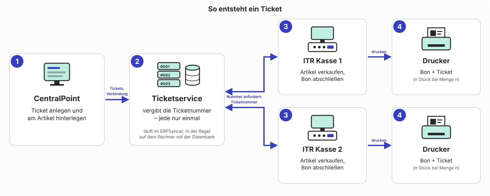
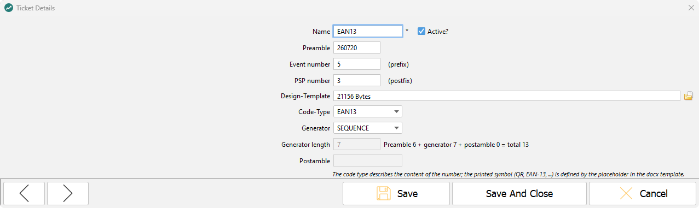
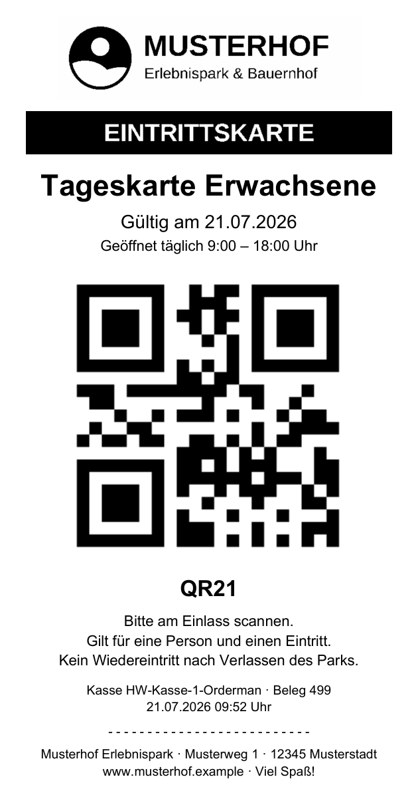
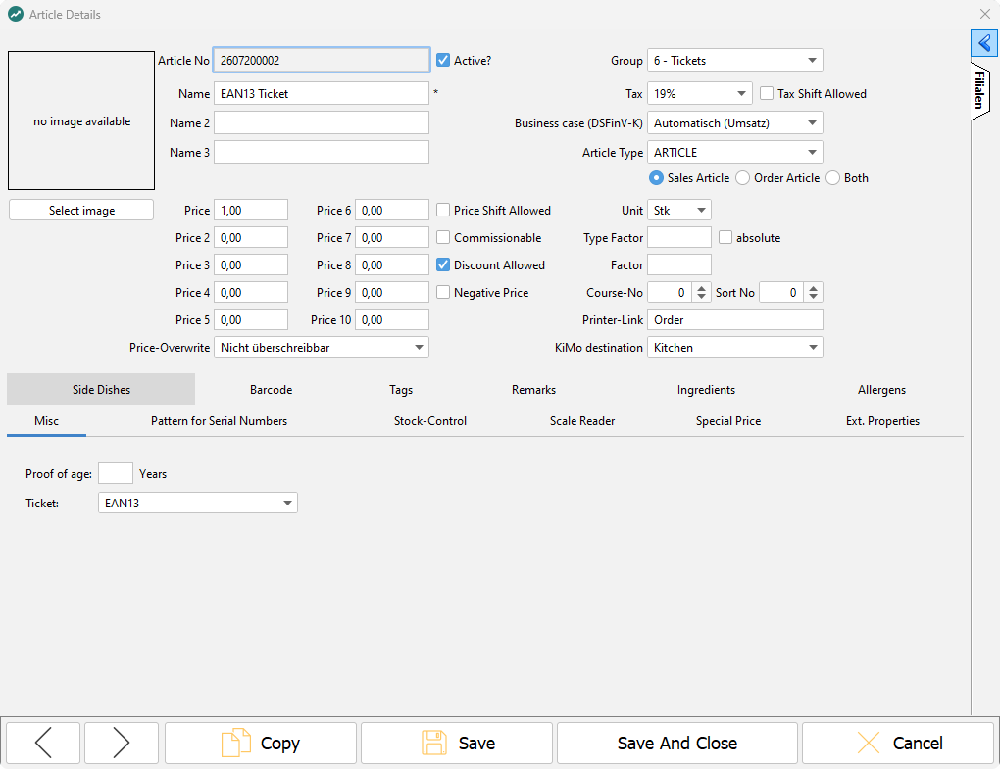

Ticketing
Mit Ticketing erzeugt die ITR Kasse beim Verkauf Eintrittstickets mit eigener Ticketnummer und druckt sie zusammen mit dem Bon aus — im einfachen Standardformat oder nach einer eigenen Design-Vorlage. Tickets und Nummernvergabe werden im CentralPoint verwaltet.
Überblick

| Produkt | Rolle | Was wird dort konfiguriert |
|---|---|---|
| CentralPoint | verwaltet die Tickets; der enthaltene Ticketserver vergibt die Ticketnummern | Verbindung zum Ticketserver, Tickets, Zuordnung Ticket → Artikel, Design-Vorlage |
| ITR Kasse | verkauft den Artikel, fordert die Ticketnummern an und druckt die Tickets | Ticketdruck aktivieren, Drucker für Tickets |
Voraussetzungen
- ITR Kasse und CentralPoint ab Version 5.55, miteinander verbunden. Ohne CentralPoint gibt es keinen Ticketserver; an einer Standalone-Kasse ist Ticketing nicht möglich.
- Im PartnerPortal freigeschaltet: Modul Professional: Ticketing für die Kasse und Modul CP Professional: Ticketing für den CentralPoint.
- Der Drucker für die Tickets ist an der Kasse eingerichtet.
- Die Zugangsdaten für den Ticketserver liegen vor.
Zugangsdaten für den Ticketserver werden je Installation vergeben. Vorbelegte Standardwerte sind vor der Übergabe an den Endkunden zu ändern.
Bis Version 5.54 wurde die Adresse des Ticketservers an jeder Kasse in Misc.ExhibitionCode.CodeServer.Url und in ipos_systemvariables eingetragen. Ab Version 5.55 entfällt das: Die Verbindung wird nur noch im CentralPoint gepflegt. Nach dem Update die Verbindung wie in Schritt 3 prüfen.
Einrichtung
1. An der Kasse: Datei syncer.properties
Die Datei liegt im Installationsverzeichnis der Kasse, z. B. C:\GoodCompany\Kasse\syncer.properties. Folgende Einträge setzen:
#Filialnummer
branch.id=<Filialnummer>
#Kassennummer
cr.id=<Kassennummer>
#Installationspfad zur Kasse, um die eingestellten Drucker zu finden
cr.installation.path=<Installationspfad der Kasse>
2. An der Kasse: Ticketdruck aktivieren
Die Kasseneinstellungen liegen in der Datenbanktabelle ipos_systemproperties. Pflichteinstellung:
#Ticketdruck aktivieren (ohne diesen Eintrag werden keine Tickets gedruckt)
Misc.ExhibitionCodes.On=true
Optionale Einstellungen:
| Einstellung | Wirkung | Standard |
|---|---|---|
Misc.ExhibitionCodes.PrintBeforeReceipt |
Tickets vor dem Bon drucken, sonst danach | danach |
Misc.ExhibitionCodes.ReceiptTypes |
Bontypen, für die Tickets erzeugt werden, kommagetrennt | 0 (normaler Bon) |
Nur für das Standardformat ohne Design-Vorlage:
| Einstellung | Wirkung | Standard |
|---|---|---|
Misc.ExhibitionCode.CodeType |
gedrucktes Symbol: QR, EAN13 oder CODE128 |
QR |
Misc.ExhibitionCode.QrCodeSize |
Kantenlänge des QR-Codes | 200 |
Misc.ExhibitionCode.BarCodeWidth |
Breite eines Barcodes | 200 |
Misc.ExhibitionCode.BarCodeHeight |
Höhe eines Barcodes | 60 |
Misc.ExhibitionCode.FontSize |
Schriftgröße | 14 |
Misc.ExhibitionCode.PrintBarcodeText |
Nummer zusätzlich als Text drucken | an |
3. Im CentralPoint: Verbindung zum Ticketserver eintragen
- Kassendaten → Tickets öffnen.
- In der Werkzeugleiste auf Ticketserver klicken.
- URL des Ticketservers, Benutzer und Passwort eintragen. Die URL beginnt mit
http://oderhttps://; da der Ticketserver im CentralPoint läuft, ist das im Regelfall nichtlocalhost. - Auf Verbindung prüfen klicken. Erwartet wird die Meldung, dass der Verbindungsversuch erfolgreich war.
- Speichern. Die Verbindung wird mit dem nächsten Stammdaten-Sync an die Kassen übertragen.
4. Im CentralPoint: Ticket anlegen
Unter Kassendaten → Tickets auf Hinzufügen klicken und das Ticket beschreiben:
| Feld | Inhalt |
|---|---|
| Name | erscheint später in der Auswahl am Artikel |
| Präambel | fester Text vor dem erzeugten Teil der Ticketnummer |
| Code-Typ | Inhalt der Ticketnummer: NUMERIC, ALPHANUMERIC, GUID, EAN8 oder EAN13 — nicht das gedruckte Symbol |
| Generator | SEQUENCE (fortlaufend) oder RANDOM (zufällig); angeboten werden nur die zum Code-Typ passenden |
| Generatorlänge | Länge des erzeugten Teils; daneben zeigt der Dialog die Gesamtlänge der Nummer |
| Postambel | fester Text nach dem erzeugten Teil; bei EAN nicht möglich |
| Veranstaltung, PSP Nummer | Angaben für den Export an die Buchhaltung (SAP); nicht Teil der Ticketnummer |
| Designvorlage | *.docx-Datei über den Dateibrowser auswählen; ohne Vorlage wird das Standardformat gedruckt |

Regeln je Code-Typ, Platzhalter und Bild-Formate für Design-Vorlagen: ITR Partner Service → Produkte → CentralPoint → Ticket-Designvorlagen: Referenz. Beispiel-Vorlage: TICKET_VORLAGE.docx — für einen Bondrucker mit 80 mm Papierbreite, mit Logo, Artikelname, Gültigkeitsdatum, QR-Code, Ticketnummer sowie Kasse und Beleg. Logo, Texte und Adresse an den Endkunden anpassen. So sieht der Ausdruck aus:

5. Im CentralPoint: Ticket am Artikel hinterlegen
In der Artikelkonfiguration im unteren Bereich den Reiter Sonstiges (englische Oberfläche: Misc) öffnen und im Feld Ticket das zuvor erstellte Ticket auswählen.

6. Im CentralPoint: Stammdaten verteilen
Die Änderungen an die Kassen verteilen und einen Synchronisationslauf abwarten. Damit erreichen auch die Ticketserver-Verbindung und die Tickets die Kassen.
Ergebnis prüfen
- Im CentralPoint meldet Ticketserver → Verbindung prüfen eine erfolgreiche Verbindung.
- An der Kasse einen Artikel mit hinterlegtem Ticket bonieren und den Bon abschließen.
- Bon und Ticket werden gedruckt.
- Die Ticketnummer ist wie im Ticket festgelegt aufgebaut: Präambel, erzeugter Teil, Postambel.
- Bei einer Position mit Menge n entstehen n Tickets.
Ablauf im Betrieb
Wird an der Kasse ein Artikel mit hinterlegtem Ticket boniert, fordert die Kasse beim Bonabschluss für jede Position Ticketnummern beim Ticketserver im CentralPoint an und druckt die Tickets. Steht auf einer Bonposition die Menge n, entstehen n Tickets. Der Bon wird wie gewohnt gedruckt, die Tickets je nach Einstellung davor oder danach. Stornorechnungen erzeugen keine Tickets.
Jede vergebene Ticketnummer wird zentral mit Bon, Filiale und Kasse gespeichert und nur einmal vergeben. Ist der Ticketserver nicht erreichbar, entsteht kein gültiges Ticket.
Eine elektronische Einlasskontrolle der erzeugten Tickets ist nicht möglich. Der aufgedruckte Code kann derzeit nicht gegen das System geprüft werden.
Fehlerbehebung
- Kein Ticket: an der Kasse
Misc.ExhibitionCodes.On=trueprüfen und ob der Bontyp inMisc.ExhibitionCodes.ReceiptTypesenthalten ist. Stornorechnungen erzeugen grundsätzlich keine Tickets. - Ticketserver nicht erreichbar: im CentralPoint Ticketserver → Verbindung prüfen ausführen. Läuft der CentralPoint? Ist der Port aus der URL im Netz freigegeben? Steht in der URL versehentlich
localhost, obwohl der CentralPoint auf einem anderen Rechner läuft? Wurde die Verbindung nach dem Speichern schon mit den Stammdaten an die Kasse übertragen? - Ticket lässt sich im CentralPoint nicht speichern: Die Angaben passen nicht zum Code-Typ, z. B. Buchstaben in der Präambel bei EAN oder
RANDOMohne Generatorlänge. - Auf dem Ticket steht
UNKNOWN: Die Design-Vorlage enthält einen Platzhalter, der nicht implementiert ist — Schreibweise gegen die Platzhalterliste prüfen. - Ticket wird abgeschnitten oder unleserlich: Format und Größe der Design-Vorlage passen nicht zum an der Kasse eingestellten Drucker.
Weitere Informationen
- ITR Partner Service → Produkte → CentralPoint → Ticket-Designvorlagen: Referenz
- ITR Partner Service → Produkte → CentralPoint → Anwendung registrieren und Module lizenzieren
- ITR Partner Service → Betrieb & Administration → Netzwerk und Ports
- ITR Partner Service → Betrieb & Administration → Bondrucker einrichten
- ITR Partner Service → News & Releases → Versionshinweise